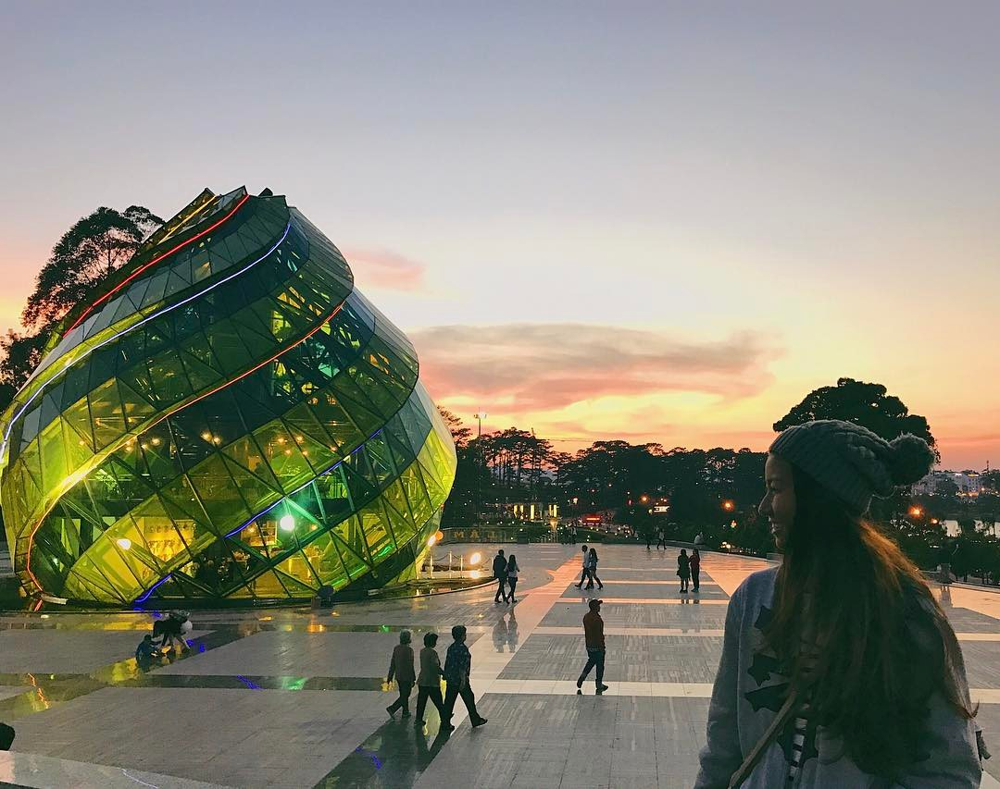
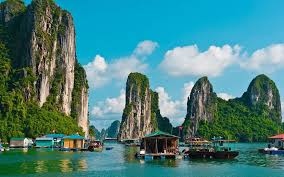

|  |
Đà Lạt
Cảnh đẹp Đà Lạt chủ yếu là thiên nhiên mang vẻ thơ mộng và lãng mạn bởi những dãy núi trùng trùng điệp điệp với những cánh rừng thông xanh bạt ngàn rì rào trong gió tạo lên vẻ quyến rũ đến say đắm lòng người.
Đặc biệt là khi bạn ngắm nhìn toàn bộ cảnh sắc thiên nhiên Đà Lạt và Thành phố sương mù với góc nhìn từ trên cao nhìn xuống sẽ rất tuyệt vời giống như chốn bồng lai tiên cảnh.
|
|  |
Hạ Long
Hiếm có đâu như ở Việt Nam, ngắm cảnh sắc thiên nhiên mà ngắm hoài không hết. Ở Việt Nam, cũng hiếm nơi nào được như Vịnh Hạ Long – Kỳ quan thiên nhiên thế giới, với hơn 2000 đảo lớn nhỏ đẹp đến mê hồn. Đến Hạ Long mùa nào cũng đẹp, nhưng phải kể đến mùa thu. Con tim bạn đã từng xao xuyến bởi mùa thu Hà Nội, còn mùa thu Hạ Long thì thế nào, đã bao giờ bạn từng nghĩ tới?
|
 |
Melissani
Melissani, Hi Lạp: Nằm trên hòn đảo Kefalonia, hang động Melissani chia làm hai phần. Phần động mở có giếng trời trên đỉnh giúp ánh sáng lọt vào bên trong, phần động còn lại rất tối và được bao phủ bởi rêu, tảo và măng đá.
|